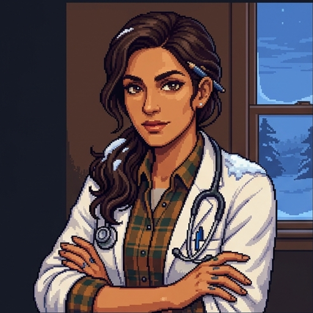
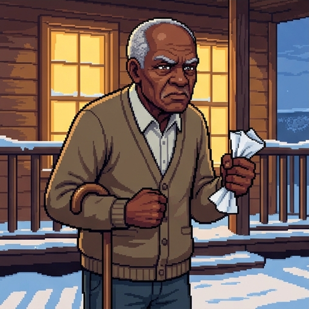
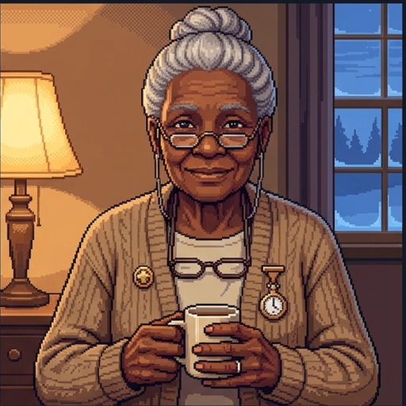
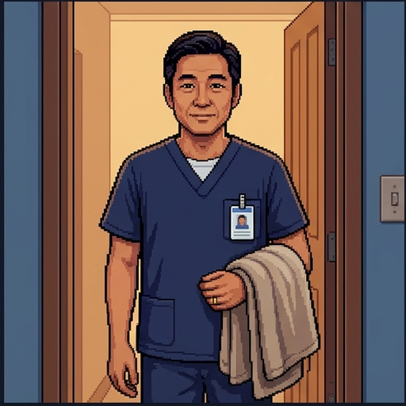
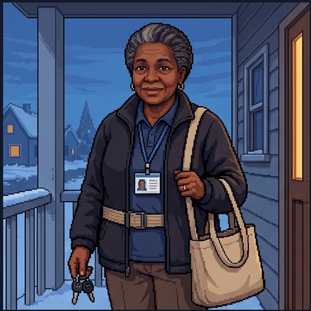
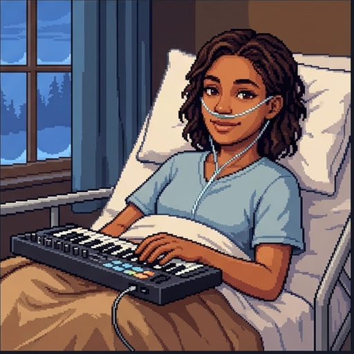
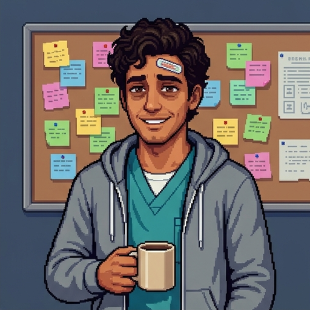
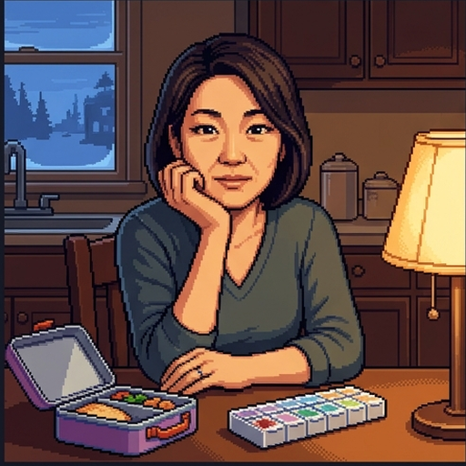
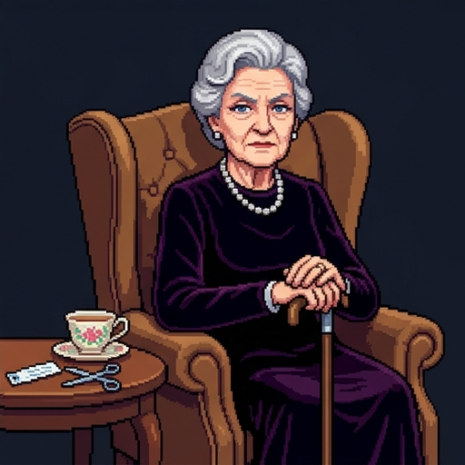
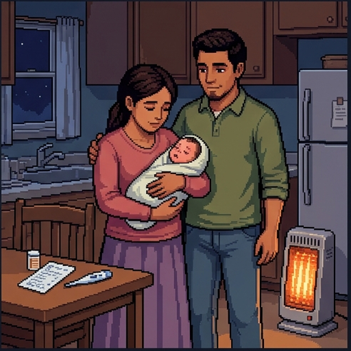

The March Practice
Orchard Falls has one family practice, one community hospital, and a January winter that will not end. Dr. Jo March has six patients to see today and one essential idea to share.
Use → (or Next) to advance and to reveal points one at a time. F = fullscreen.
Welcome to The March Practice. Orchard Falls has one family practice, one community hospital, and a January winter that will not end. Doctor Jo March has six patients to see today and one essential idea to share. Whenever it's your turn, I'll stop and wait for you.

"I Am Not a Warm Person"
"Ask anyone in town," Dr. March says, setting down her bag. "I don't do cheerful bedside small talk."
Doctor March sets down her bag. She says to ask anyone in town: she doesn't do cheerful bedside small talk. She also says she is not a warm person.
- She is blunt, direct, and visibly impatient with administrative pretense.
- Yet when a neighbor receives a terrifying diagnosis, Jo is the first clinician they call.
- How can someone who lacks an easy bedside manner still excel at patient care?
- Because care is an acquired clinical virtue, not an outgoing temperament.
Before Rounds
Five initial value questions, with no right or wrong answers. State where you stand now, and we will revisit them at the end of the day.
Caring is a personality trait. Some people have it and some don't.
A clinician who follows every guideline correctly has done the job, whether or not the patient felt cared for.
It is possible to care too much, and that is a real professional failing, not just a strength taken too far.
Care is mostly about feelings. Competence is a separate matter.
Whether clinicians can care for patients well depends more on how their workplace is run than on their own character.
Before rounds, here are five questions about what you value. There are no right or wrong answers. State where you stand now, and you'll revisit them at the end of the day. Rate each statement, then press Submit.
Saved. You'll come back to these at the end of the day.

"I Was Processed"
Every clinical box was checked. Nobody looked him in the eye.
Now, Act one. Every clinical box was checked, and nobody looked him in the eye.
- Mr. Laurence, 82, was discharged after three days of inpatient care for heart failure.
- Medications were reconciled, instructions printed, follow-up booked, and forms signed in eleven minutes.
- By every hospital quality metric and chart audit, the discharge was completely flawless.
- Yet he left clutching a five-page packet he could not read, telling his family: "I was processed."
Why Rule-Following Falls Short
Checklists ensure procedural compliance. They cannot guarantee ethical care.
Why isn't following the rules enough? Checklists ensure procedural compliance. They can't guarantee ethical care.
- Autonomy became paperwork: getting a signature on a form rather than ensuring genuine understanding.
- Beneficence became medication titration without asking what he feared about going home alone.
- Principles tell clinicians what duties are owed, but rules cannot tell you how to listen, perceive, or respond.
- The virtue of care is not an optional extra added to principles. Cultivating care is what makes it possible to reliably fulfill them.
Two Moral Questions
Ethics asks two complementary questions: principles address action; virtues address character.
Public, verifiable action-guides. Clinicians specify them, weigh them in dilemmas, and justify them systematically.
Mr. Laurence's discharge satisfied every formal principle requirement on paper.
Stable traits of character. They govern how a clinician perceives human needs and determine the manner in which care is delivered.
Clinical ethics holds that principles and virtues are partners rather than rivals.
Ethics asks two complementary questions. Principles address action. Virtues address character. Principles ask, what should I do? They're public, verifiable action-guides. Clinicians specify them, weigh them in dilemmas, and justify them systematically. Mr. Laurence's discharge satisfied every formal principle requirement on paper. Virtues ask, who should I be? They're stable traits of character. They govern how a clinician perceives human needs, and they determine the manner in which care is delivered. Clinical ethics holds that principles and virtues are partners rather than rivals.
Diagnosing the Gap
Principles
Virtues
They answer the question "What should I do?"
They answer the question "Who should I be?"
Public guides to action that clinicians specify, weigh, and justify
Stable traits of a clinician's character
They shape how a clinician perceives what a patient needs
Mr. Laurence's discharge met every one of them on paper
Diagnosing the gap. Sort each description under principles or virtues. When every item is placed, press Check answers.
Right. Principles answer what to do, and Mr. Laurence's discharge met every one on paper. Virtues answer who to be, and his discharge was missing those.
Virtue as a Disposition
"I do not feel warm," Jo says. "I do care. Those are different things, and the distinction matters."
Now, virtue as a disposition. Doctor March says she doesn't feel warm, but she does care. She says those are different things, and the distinction matters.
- A virtue is a stable, acquired disposition of character.
- It involves internal motivation: you act because you value the good, not just from compliance.
- Aristotle called it a settled state (hexis), not a passing mood. You can care well even on a hard day.
- It is not a fleeting feeling, not an innate personality type, and not a rulebook.

How Virtue Is Cultivated
"Nobody is born with clinical character," Jo says. "You learn it in stages."
How is virtue cultivated? Nobody is born with clinical character, Jo says. You learn it in stages.
- First, from parents: Watching Marmee care for sick neighbors taught her attentiveness early.
- Next, from mentors: Senior clinicians taught her to look past the chart to see the patient.
- Finally, through habit: Deliberately sitting at every bedside until it became second nature.
- Virtue is not an innate gift; it is built through guided repetition. Aristotle said the same: we become just by doing just acts.
Cultivating Clinical Character
Virtues are not mastered by memorizing codes of ethics. They are developed through guided practice and mentorship.
Virtues aren't mastered by memorizing codes of ethics. They're developed through guided practice and mentorship.
- Medical training teaches clinical procedures, diagnostic pathways, and electronic charting systems.
- Learning how to perceive unspoken distress requires observing mentors and receiving constructive feedback.
- Dr. March's role with resident Amy is helping a capable, protocol-driven clinician look beyond the screen.
- Mentoring feedback must itself model care: attentive, constructive, and supportive rather than punitive.
Rounds with Amy
Debrief resident Amy across three cases. Choose feedback that guides her while modeling care.
Rounds with Amy. Debrief resident Amy across three cases. Choose feedback that guides her while modeling care. When you're ready, press Continue.

Care and Flourishing
Why cultivate a virtue at all? The ancient answer concerns the clinician as much as the patient.
Why cultivate a virtue at all? The ancient answer concerns the clinician as much as the patient.
- Aristotle's term eudaimonia means human flourishing: living well over a whole life.
- Virtues are not an exhausting tax on life; they are part of what makes a life good.
- Practicing genuine care brings purpose to the caregiver, not just benefit to the patient.
- When care becomes so ungrounded that it destroys the carer, something has gone wrong.
Evaluating the Concept
A virtue is a stable disposition of character, not a solitary good act.
Virtues are acquired through repeated practice, much like clinical skills.
A moral virtue involves internal motivation to do what is right, not just rule compliance.
A virtue is an overwhelming emotional feeling of personal sympathy.
You are either born with a caring virtue or you can never acquire it.
A virtue is a rigid algorithmic checklist that specifies exact actions in advance.
Evaluating the concept. Check every true statement about a moral virtue, then press Check answers.
Correct. A virtue is an acquired disposition developed through ongoing practice, motivated by a commitment to good patient care.

Care as Skilled Labor
Hannah is a home health aide arriving at her fourth client's home at dusk in the snow.
Now, care as skilled labor. Hannah is a home health aide, arriving at her fourth client's home at dusk in the snow.
- Hospital posters treat "care" as a slogan. In clinical ethics, it is demanding, skilled work.
- Beauchamp and Childress define care as emotional commitment to a person, combined with the active willingness to act on their behalf.
- Berenice Fisher and Joan Tronto put it more broadly: care is everything we do to maintain, continue, and repair our world.
- Notice what this demands: not performative cheerfulness, but dependable presence and skilled effort.

The Four Phases of Care
The political theorist Joan Tronto names four parts of good care. Beth, 24, has lived with chronic illness for years. Caring for her takes all four.
The political theorist Joan Tronto names four parts of good care. Beth, twenty-four, has lived with chronic illness for years. Caring for her takes all four.
- 1. Attentiveness: Noticing the need. Beth has grown quiet and stopped asking about medications.
- 2. Responsibility: Stepping in to address her withdrawal rather than passing it to night shift.
- 3. Competence: Executing care skillfully. Kind words with incorrect medication is sentimentality, not care.
- 4. Responsiveness: Checking how the care landed with Beth—because only the recipient knows.

The Instruments of Care
Beauchamp and Childress name five focal virtues that serve as practical instruments of care.
Beauchamp and Childress name five focal virtues that serve as practical instruments of care.
- Compassion provides awareness of suffering. Discernment judges what this patient needs right now.
- Trustworthiness ensures reliability. Integrity holds your values and actions together.
- Conscientiousness is the follow-through: orders placed, labs verified, families updated.
- The nursing code of ethics opens with compassion and respect for the dignity of every patient.
Care vs. Warmth
Warmth is an innate personality temperament; care is a cultivated clinical virtue.
A natural personality trait that varies by individual. It can be easily simulated for a short time, and its absence does not make a clinician incompetent.
A cheerful clinician who neglects a promised lab check was pleasant, not caring.
A learned, disciplined orientation evident when patients are frustrated and clinic hours are stretched thin. It is inseparable from technical competence.
A tired, direct clinician pulling up a chair at the end of a long day to explain a difficult diagnosis.
Care versus warmth. Warmth is an innate personality temperament. Care is a cultivated clinical virtue. Warmth is a natural personality trait that varies by individual. It can be easily simulated for a short time, and its absence doesn't make a clinician incompetent. A cheerful clinician who neglects a promised lab check was pleasant, not caring. Care is a learned, disciplined orientation, evident when patients are frustrated and clinic hours are stretched thin. It's inseparable from technical competence. Picture a tired, direct clinician pulling up a chair at the end of a long day to explain a difficult diagnosis.
Defining the Elements
A virtue is a stable disposition of character.
Care involves emotional commitment to a person
and a willingness to act on their behalf.
Care without competence is sentimentality.
Defining the elements. Fill in each blank, then press Check.
A virtue is an acquired disposition. And care without competence is sentimentality.
Recognizing Complete Care
Attentiveness
Responsibility
Competence
Responsiveness
A nurse notices that Beth has stopped asking about her medications
A resident spots that Beth apologizes every time staff come in
Rather than leave it for the night shift, the nurse takes the problem on herself
The nurse double-checks the new dose before giving it
Kind words aren't enough, so the nurse gets Beth's medication exactly right
The next day, the nurse asks Beth how the change has worked for her
Recognizing complete care. Beth has grown unusually quiet in the clinic. Sort each action under the part of care it shows, then press Check answers.
Right. Attentiveness notices the need. Responsibility takes it on. Competence carries it out skillfully. And responsiveness checks how it landed.
Detachment and Over-Involvement
Clinical care can fail in two opposite directions. Both harm the patient, and one also depletes the caregiver.
The patient is treated primarily as a case or a dataset. Protocols are completed, but personal presence is entirely absent.
Amy's hurried eleven-minute discharge where the patient felt processed.
A lack of boundaries where the caregiver takes on every burden personally, leading to exhaustion, loss of objectivity, and burnout.
Laurie working consecutive extra shifts while sick and answering family messages at midnight.
Detachment and over-involvement. Clinical care can fail in two opposite directions. Both harm the patient, and one also depletes the caregiver. Detachment is a deficiency. The patient is treated primarily as a case or a dataset. Protocols are completed, but personal presence is entirely absent. Think of Amy's hurried eleven-minute discharge, where the patient felt processed. Over-involvement is an excess. It's a lack of boundaries, where the caregiver takes on every burden personally, leading to exhaustion, loss of objectivity, and burnout. Think of Laurie working consecutive extra shifts while sick, and answering family messages at midnight.

Paternalism as Misdirected Care
Meg is the eldest sister, teaching part-time, raising two children, and serving as Aunt March's primary unpaid caregiver.
Meg is the eldest sister, teaching part-time, raising two children, and serving as Aunt March's primary unpaid caregiver.
- Convinced that Aunt March could no longer live safely on her own, Meg quietly scheduled an assisted-living tour without consulting her.
- Meg acted out of deep love and anxiety, yet her intervention crossed into unjustified paternalism.
- Care that ceases to listen to the patient ceases to respect their agency. It begins doing things to a person rather than with them.
- In clinical ethics, this is the intersection where beneficence and respect for autonomy must be balanced with discernment.
The Dilemma of the Soup
Jo lives next door to Mr. Laurence. On a freezing Sunday, she has a pot of soup and knows he is home alone.
Jo lives next door to Mr. Laurence. On a freezing Sunday, she has a pot of soup and knows he's home alone.
- Medical ethics codes strictly warn against dual relationships: becoming a neighbor or friend can cloud clinical judgment.
- If she brings the soup, does she compromise her objective medical authority as his physician?
- Yet in a small town where patients are also neighbors, refusing a simple gesture of kindness feels inhuman.
- The soup is steaming on the stove. Two genuine ethical intuitions pull in opposite directions.
Decision Point: Sunday Afternoon
Not graded. Experienced clinicians often evaluate this dilemma differently.
Bring the soup. Compassionate care does not end at the office door.
Do not bring it. Dual relationships inevitably threaten objective medical judgment.
Bring it as a neighbor, and state clearly that she is visiting as a friend.
Decision point: Sunday afternoon. Experienced clinicians often evaluate this dilemma differently. The soup is ready on the stove. What should Doctor March do? This one isn't graded. Pick the answer closest to your view, and read its note.
Professional guidelines caution against dual relationships. But an unbending rule against bringing soup would undermine the human fabric of community medicine. Practical discernment balances the two.
When Care Becomes Martyrdom
Laurie has covered ten extra ICU shifts this month. Today he arrived with a fever.
Laurie has covered ten extra ICU shifts this month. Today he arrived with a fever.
- He is beloved by patients and always volunteers when the hospital is understaffed.
- He believes that sacrificing personal sleep and health is the ultimate proof of clinical dedication.
- Yet an exhausted, feverish nurse cannot maintain vigilance or protect patients from error.
- Does genuine clinical care have limits, or is endless self-sacrifice its highest ideal?
Evaluating Over-Involvement
Detachment
Over-involvement
Paternalism
Laurie works ten extra shifts this month and comes in with a fever
Mr. Laurence's discharge takes eleven minutes, and nobody looks him in the eye
Meg books an assisted-living tour for Aunt March without asking her
A nurse answers patients' families at midnight, every night, and is worn out
A doctor deals with a patient as nothing more than a set of lab results
Sure that her father shouldn't drive, a daughter sells his car without asking him
Evaluating over-involvement. Each item is a way care can go wrong. Sort each one under detachment, over-involvement, or paternalism, then press Check answers.
Right. Detachment is too little presence. Over-involvement is too much. And paternalism is care that stops listening and decides for the person.

Autonomy and Non-Abandonment
Aunt March is 88, has capacity, and has snipped off her hospital wristband. She refuses admission.
Aunt March is eighty-eight, has capacity, and has snipped off her hospital wristband. She refuses admission.
- The principle of autonomy is clear: a competent adult has the right to refuse treatment.
- Care adds what the principle leaves out: honoring a refusal is not the same as walking away.
- Jo respects the choice while staying involved: planning home symptom control and checking back Thursday.
- Her choice sits inside a web: Meg, Hannah, Jo. Care attends to the relationships sustaining her.
Specifying Benefit and Harm
Beth apologizes whenever staff enter. Principles tell us to benefit and not harm; care defines what those mean for Beth.
Beth apologizes whenever staff enter. Principles tell us to benefit and not harm. Care defines what those mean for Beth.
- Beneficence needs context: Beth values attending her niece's recital over two extra days of observation.
- Attentive care discovers that priority through dialogue, earning the trust required for her to speak.
- Nonmaleficence has blind spots: no checklist names the harm of a patient afraid of being a burden.
- Attentiveness catches subtle distress, ensuring principles serve the person rather than the chart.

Justice and the Care Economy
The Hummels are a farmworker family with a sick infant and no insurance. Hannah, their aide, is paid hourly by an agency.
The Hummels are a farmworker family with a sick infant and no insurance. Hannah, their aide, is paid hourly by an agency.
- Meg's unpaid hours, Hannah's modest wages, and the Hummels' pharmacy receipt expose real inequalities.
- Care work is historically underpaid. A virtue of care at the bedside without structural justice is incomplete.
- Care ethics also addresses partiality: clinicians naturally feel dedicated to their assigned patients.
- Public justice governs the fair distribution of resources, while care governs personal attention at the bedside.
Origins and Traditions of Care
Care ethics emerged from feminist philosophy and connects to diverse global traditions.
Care ethics emerged from feminist philosophy, and it connects to diverse global traditions.
- Carol Gilligan (1982) and Nel Noddings (1984) named care ethics, validating relational moral reasoning.
- Feminist theory challenged the view that moral maturity consists solely of abstract, detached rules.
- Care appears across cultures: Confucian ren, Buddhist karuṇā, ubuntu, and nursing traditions.
- Virginia Held views care as a distinct relational ethic; this lesson treats care as an essential clinical virtue.
Complementary Frameworks
Care ethics identifies two longstanding weaknesses in principle-based theory, while principles provide essential safeguards for care.
Principles can encourage excessive detachment and formal impartiality, underestimating the legitimate role of emotion and relationship in clinical life.
Care re-centers the patient's individual experience within the medical system.
Principles provide public accountability, preventing personal bias, favoritism, and well-intentioned paternalistic overreach.
Principles reminded Meg that her affectionate intentions could not override Aunt March's clear choices.
Complementary frameworks. Care ethics identifies two longstanding weaknesses in principle-based theory, while principles provide essential safeguards for care. First, what care corrects. This is a critique of principles. Principles can encourage excessive detachment and formal impartiality, underestimating the legitimate role of emotion and relationship in clinical life. Care re-centers the patient's individual experience within the medical system. Second, what principles protect. These are safeguards for care. Principles provide public accountability, preventing personal bias, favoritism, and well-intentioned paternalistic overreach. Principles reminded Meg that her affectionate intentions could not override Aunt March's clear choices.
Non-Abandonment in Practice
Overriding her refusal, because genuine care always requires clinical hospitalization.
Documenting the refusal on the electronic chart and discontinuing all medical contact.
Continuing to pressure her with persuasive arguments until she changes her mind.
Continued clinical presence, home-based symptom support, and collaborative planning.
Non-abandonment in practice. Aunt March has decision-making capacity and refuses hospital admission. What does the virtue of care add to respecting her refusal? Pick an answer.
Respect for autonomy is satisfied once the refusal is documented. Care adds non-abandonment: staying connected, making a home-based plan, and supporting the family caregivers.
Synthesizing the Framework
Clinical ethics holds that principles and virtues are complementary.
Care ethics charges principle-based theory with overvaluing impartiality
and neglecting emotion.
Partiality toward your own patient is legitimate;
justice governs how care is distributed.
Synthesizing the framework. Fill in each blank, then press Check.
Clinical ethics treats principles and virtues as complementary. Justice governs how care is distributed, and care governs personal clinical relationships.
Revisiting Your Perspectives
Review the statements from the beginning of rounds. Re-rate each one. Retaining your original perspective is entirely valid; the goal is to evaluate whether your reasoning has deepened.
Revisiting your perspectives. Review the statements from the beginning of rounds, and re-rate each one. Keeping your original view is entirely valid. The goal is to see whether your reasoning has deepened. When you're done, press Submit.
Saved. Now, a quick summary of the lesson.
"This Is a Practice"
"A practice is not an accident of language," Jo says. "It is a skill built by repetition."
Jo says a practice is not an accident of language. It's a skill built by repetition.
- A virtue is a disposition built through practice, orienting clinical work.
- Care combines four phases with focal virtues like discernment and integrity.
- Care needs boundaries to stay sustainable, guarding against detachment and exhaustion.
- Virtues complete biomedical principles, bringing empathy and perception to clinical rules.
Complete all exercises and both belief probes to finish.
For Further Reading
If you'd like to go further, here are some good places to start, each with a note on why it's worth your time. Thanks for playing.
- Maureen Sander-Staudt, “Care Ethics,” Internet Encyclopedia of Philosophy. A free overview of Gilligan, Noddings, Held, and Tronto.
- Aristotle, Nicomachean Ethics, Book II. Virtue as a settled state, built by practice.
- Tom L. Beauchamp and James F. Childress, Principles of Biomedical Ethics, 8th ed. (Oxford University Press, 2019), chapter 2. The five focal virtues and the place of care in medicine.
- Joan C. Tronto, Moral Boundaries: A Political Argument for an Ethic of Care (Routledge, 1993), chapters 4–5. Attentiveness, responsibility, competence, and responsiveness, in Tronto’s own words.
- Carol Gilligan, In a Different Voice: Psychological Theory and Women’s Development (Harvard University Press, 1982). The book that opened the care ethics debate.
About this lesson. Brendan Shea, PhD, wrote this lesson with help from AI tools. Claude (Anthropic) helped draft the text and code and check facts, and the illustrations were made with AI image generators. The narrator's voice is synthetic (Google Gemini text-to-speech). The author reviewed everything and is responsible for any errors.